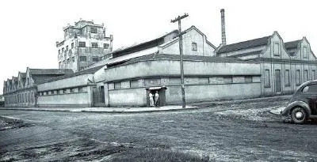
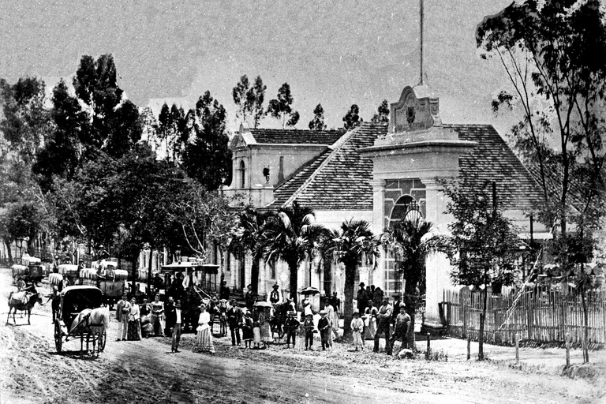
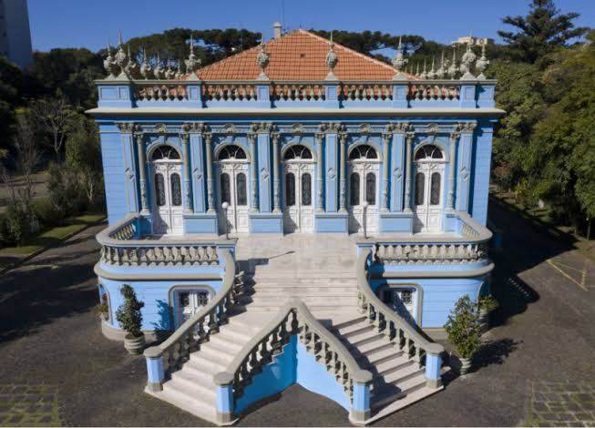

Bem-vindo ao Site
Este site apresenta a relação entre a arquitetura histórica do Paraná e os Barões da Erva-Mate. Durante os séculos XIX e XX, a riqueza obtida com a produção e exportação da erva-mate permitiu que esses empresários construíssem casarões, palacetes, fábricas e prédios públicos que ainda fazem parte do patrimônio histórico paranaense, especialmente em Curitiba.

Quem Foram os Barões da Erva-Mate
Os Barões da Erva-Mate foram importantes empresários que enriqueceram com a produção, industrialização e exportação da erva-mate. Sua influência foi fundamental para o desenvolvimento econômico do Paraná. Além de gerar empregos, eles investiram na construção de indústrias, ferrovias, escolas, igrejas e elegantes residências que marcaram a paisagem urbana do estado.

O Legado da Erva-Mate na Arquitetura Paranaense
O ciclo econômico da erva-mate deixou um importante legado arquitetônico no Paraná. Muitos casarões, palacetes e edifícios históricos construídos com os recursos obtidos nesse período são preservados até hoje e representam a riqueza, a cultura e a história do estado. Esses monumentos ajudam a contar como a erva-mate contribuiu para o crescimento das cidades paranaenses.
